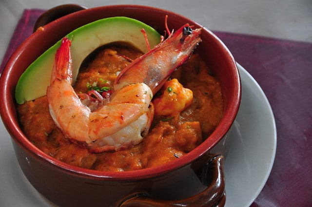
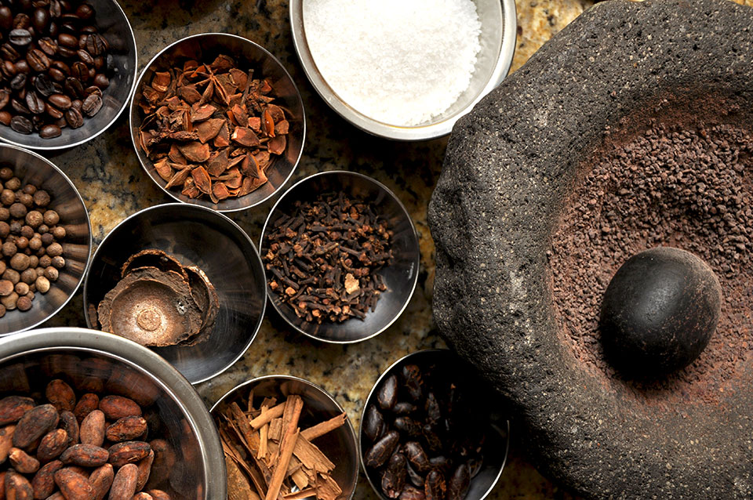
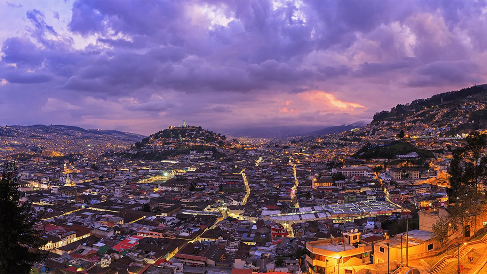
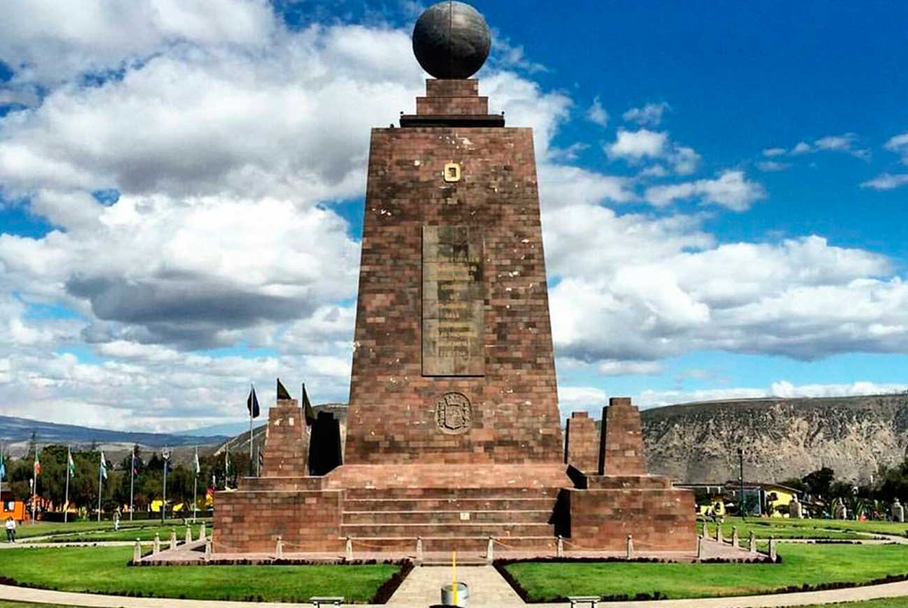
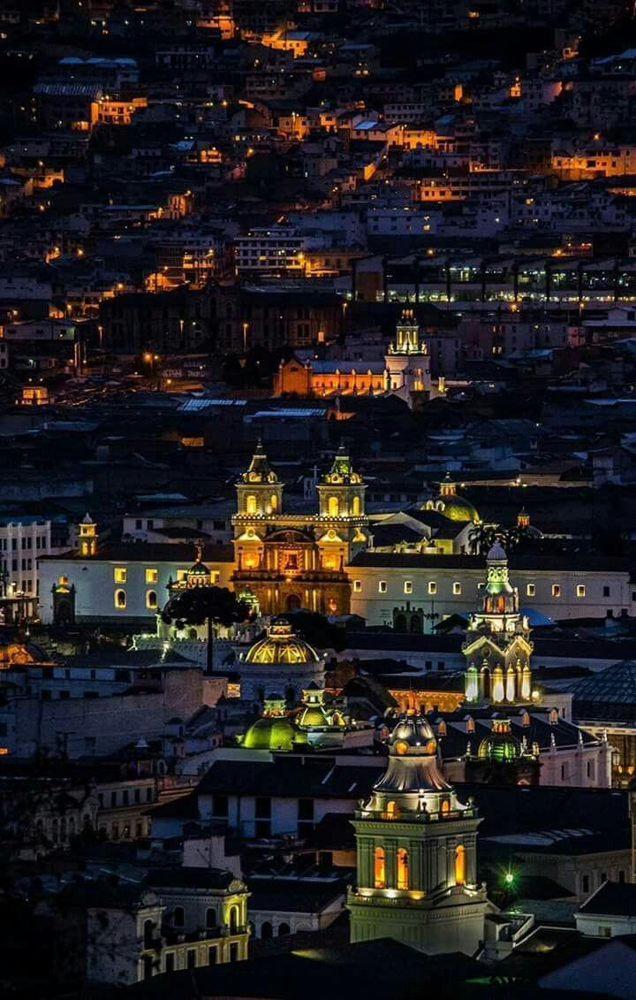
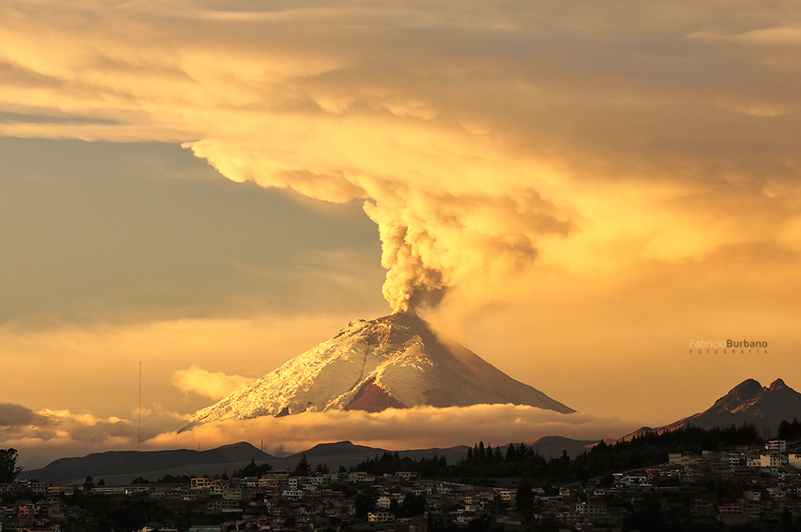

<!--
Developer:Javier Garcia
Date: Oct 23 ,2019
Version:1.0
Description: Final Project - Photo Gallery
  -->
<!DOCTYPE html>
<html lang="en" dir="ltr"/>
  <head>
    <meta charset="utf-8"/>
    <title>Images</title>
    <link rel="stylesheet" href="./css/quito.css">
    <link rel="stylesheet" href="https://cdnjs.cloudflare.com/ajax/libs/font-awesome/4.7.0/css/font-awesome.min.css">
  </head>
  <body>
    <header>
      <ul>
      <li class="search-container">
        <form action="action_page.php">
        <input type="text" placeholder="Search.." name="search">
        <button type="submit"><i class="fa fa-search"></i></button>
        </form>
      </li>
      <li class="home">
        <a href="index.html">
        
        </a>
      </li>
      <li id="menu-t">
        <a target=_block href="https://quitotravel.ec/en/" class=menuhover>Tourism</a></li>
      <li id="menu-hotels">
        <a target=_block href="https://ecuador.travel/en/" class=menuhover>Ecuador </a></li>
      <li id="menu-language"> Language
        <ul id="dropdown">
          <li><a href="#">English</a></li>
          <li><a href="#">French</a></li>
          <li><a href="#">Spanish</a></li>
        </ul>
      </li>
      </ul>

    </header>
    <div id="content">
      <p>
          
             Breakfast in Quito starts with the familiar scent of freshly baked bread wafting around every block,
             and thanks to the altitude, baked goods in Quito have a distinctly perfect texture and flavor.
             In Ecuador, as in most of Latin America, lunch or almuerzo is the most abundant meal of the day and it always features a soup;
             a simple consomé, a healthy quinoa soup, a creamy potato locro served with avocado; or a coastal-inspired,
             onion-infused fish stew like the encebollado. Then, there’s the ceviche, a tomato and onion-charged concoction like no other t
             hat usually features shrimp or fish marinated in lime juice, plus several other surprising ingredients. Finally, at the center
             of every dining table in Ecuador is the ají, which, if you’re a fan of hot sauce, you won’t want to miss, as each household
             and each restaurant has their own unique recipe. </p>

        <p>
        
          Ecuador has often been regarded as the home of the world’s best chocolate. As one of the world’s
          largest exporters of cacao, it’s no small wonder it holds this title. Visitors and chocolatiers
          alike from around the world never hesitate coming to Quito simply to dive into the wonderful world of
          Ecuador’s chocolate. As one of the country’s biggest claims to fame, visitors will be delighted to pair
           a good chocolate tasting with several of the fantastic views around Quito, which we’ll get into below!
      </p>
        
        <p>
          Markets are one of the best ways to get a true taste of what this city is all about!
          As soon as you set foot in one of these amazing places, endless piles of fresh fruit greet you with their sweet aroma
          and vivid colors. Feeling hungry? Don’t worry, the kind folks who sell this selection of exotic and wonderful
          fruits and vegetables are always willing to offer you a sample! A few steps away, you’ll find a mesmerizing bed of flowers,
          amazing bodegas packed with trinkets you never knew you needed, and seamstresses always ready to give that hole
          in your shirt a quick fix. Visiting a market in Quito is like being part of a fascinating carnival; you’ll never grow
          tired of it!
     </p>

        
        <p>
          Put simply, the views in Quito go on for days. Whether it’s the way the clouds slither over the hillsides
          and mountain tops at dusk, or the way the light illuminates the surrounding valleys at dawn, no visitor will
          walk away from Quito without a feeling of complete wonder. The best part? There’s numerous ways of experiencing
          these remarkable views throughout the city, one of which involves taking a short journey aboard
          the TelefériQo (Quito’s gondola) to the top of the Pichincha Volcano. This gondola also happens
          to be one of the highest areial lift in the wnetire world, going from 3,117 m (10,226 ft)
          all the way to 3,945 m (12,943 ft) above sea level!
     </p>

        
        <p>
        Quito holds a pivotal spot in Ecuador, pinning the north-central region of the country that happens
         to be less than an hour away from the equator. As a result, the city of Quito makes for an excellent
         jumping-off point to visit the Galapagos Islands, the rest of the Andes mountain range,
         and/or the nearby tropical forests – some of which are so conveniently close to Quito that
         they’re actually still within its metropolitan district. The city’s airport also has direct
         flights to/from several major cities in the world, including but not limited to: Miami,
         Panama City, Madrid, Amsterdam, and Bogota.
     </p>

        
        <p>
        Quito has one of the most unique collections of museums in Latin America.
        The most famous of these are the Guayasamín Museum and Chapel of Man (Capilla del Hombre),
        which pays homage to the work of humanist and abstract painter, Oswaldo Guayasamin.
        Then, there’s the renowned Contemporary Art Center or CAC.
        The building, located high above the city center, is an old military hospital that has been repurposed
        and revived with some of the most spectacular, cutting-edge exhibits by artist from all over the world.
        The tranquility and inspiration you feel here is like no other. Another remarkable museum is the Mindalae
        Ethnohistoric & Crafts Museum of Ecuador, which features originals and replicas of pre-Hispanic artifacts,
        offering visitors an appreciation of the cultures that existed in centuries past.
         La Casa del Alabado Museum is also a unique and quaint way of discovering pre-Columbian art in a restored colonial house,
          with all of its pieces organized and structured thematically rather than chronologically.
     </p>

       
       <p>
         The weather in Quito is, by all means, exciting. Sometimes, it feels like we go through every known season in just one day! In the morning, you’ll wake up to a deep blue sky crowned by a glowing sun and soft cotton-like clouds. In the afternoon, the mist starts cascading down the mountains as a refreshing drizzle (that can turn into a heavy rain in a heartbeat) caresses your face. At night, after everything has cleared up, you can enjoy the chilly Andean wind as you look up to the starry sky in awe. All in all, we can assure you that no day in Quito is the same as the one before!
     </p>

        
        <p>
         As focused as Quito has been in accommodating its ever-growing population, it has kept a keen
         eye on restoring, maintaining, and expanding its green spaces. Nature is essential to our survival
         and quiteños are becoming increasingly aware of this. Quito’s equivalent of Central Park is Parque La Carolina.
         This green space is a favorite for many residents, given its size, its athletic fields and facilities,
          and its relatively new aquatic area. Parque La Carolina is also home to Quito’s award-winning Botanical Garden,
          boasting the most impressive collection of orchids in the world.
          Quito’s largest city park is also one of the largest metropolitan parks in South America:
          Parque Metropolitano (also referred to as the “lungs of the city”)
          rests atop a large hill opposite Pichincha and covers an area of 560 hectares.
    </p>
    </div>


    <footer>
        <a href="contactform.html" id="contact">Contact Us</a>
        <a href="mailto:javiluv@me.com.?Subject=Hello%20again"><i class="fa fa-envelope"></i></a>
        <a target=_block href="https://www.facebook.com/trivagoCA/" class="fa fa-facebook"></a>
        <a target=_block href="https://twitter.com/trivago" class="fa fa-twitter"></a>
        <div class="Copyright">
          Copyright 2019 travelbird | All rights reserved.
        </div>

      </footer>

    </body>
    </html>
